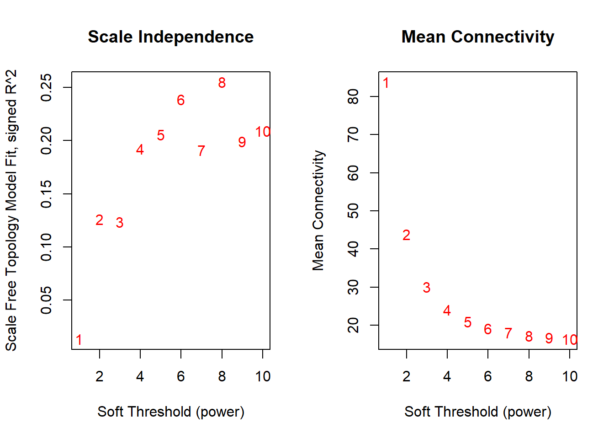

Section 6 WGCNA Pipeline
Description: This pipeline automate WGCNA pipeline. So What is WGCNA? Weighted Gene/Metabolite Co-expression Network Analysis (WGCNA/WMCNA) WGCNA (for genes) and WMCNA (for metabolites) are network-based methods used to identify groups of co-expressed molecules, called modules, that may share common biological functions.
The analysis starts by computing pairwise correlations (typically Pearson) between all features across samples. These correlations are then transformed into a weighted network using a soft-thresholding power, this help remove weak association- which ensures that the resulting network follows a scale-free topology, a common feature of biological systems.
From the adjacency matrix, a topological overlap matrix (TOM) is calculated to measure how connected each pair of features is, considering both direct and shared connections. This leads to the identification of modules through hierarchical clustering and dynamic tree cutting, grouping together molecules with similar expression patterns.
To relate modules to biological phenotypes, the module eigengenes (the first principal component of each module) are correlated with external traits, typically using Pearson correlation. When the phenotype is binary, it is encoded as 0 and 1. Modules that are significantly correlated with the phenotype of interest are then subjected to functional enrichment analysis to uncover associated pathways and biological functions.
Finally, within these relevant modules, hub genes or metabolites—those with high intra-modular connectivity (i.e., high degree centrality)—are identified. These hubs are considered potential biomarker candidates or key regulatory features associated with the condition under study.
Output Files:
module_eigengenes.csv: Eigengenes (first principal component) for each module; used for trait correlation.
gene_module_assignment.csv: Module assignment of each gene/metabolite (e.g., blue, brown, etc.).
modules.csv: Lists of features grouped by module. Each column represents a module.
module_membership.csv: Correlation (kME) of each gene with its module eigengene (i.e., intramodular connectivity).
gene.trait.corr.csv: Correlation between each gene and the phenotype(s).
module_hubs.csv: Hub genes/metabolites within each module (high kME > hub_threshold).
CytoscapeInput-edges-.txt: Edge list for each module’s network (TOM similarity > 0.02); ready for Cytoscape.
Project Initialization
#Sets the working directory and creates subfolders for organizing outputs.
mypath= "C:/Users/USER/Documents/Github/CRC_project/"
dir.create("output")
dir.create("plots")
dir.create("input")#Load libraries
library(tibble)
library(plyr)
library(dplyr)
library(tidyverse)
library(WGCNA)
allowWGCNAThreads() ## Allowing multi-threading with up to 4 threads.#load data
#expression data
data= read.csv(paste0(mypath,"input/data_for_downstream.csv"))
data = data |> column_to_rownames(colnames(data)[1])
group_dist= gsub("_.*", "", colnames(data))
group_levels= unique(group_dist)
#metadata
metadata= data.frame(sample= colnames(data) ,
condition= group_dist)
#metadata= read.csv("input/metadata_test.csv" )
metadata = metadata |> column_to_rownames("sample")
metadata$condition= factor(metadata$condition, levels = group_levels)
design= model.matrix(~ 0+condition , metadata)
colnames(design)= gsub("condition","", colnames(design))
head(design)## CRC Ctrl
## CRC_01 1 0
## CRC_02 1 0
## CRC_03 1 0
## CRC_04 1 0
## CRC_05 1 0
## CRC_06 1 06.1 WGCNA Pipeline
6.1.1 Choose appropriate power for soft-thresholding
# Elbow plot to choose the appropriate soft-thresholding power that ensures a scale-free (power-law) network topology.
plotelbow <- function(data) {
# Choose a set of soft-thresholding powers (up to 20 is more informative)
powers <- c(1:10)
# Pick the soft threshold based on scale-free topology criterion
sft <- pickSoftThreshold(t(data), powerVector = powers, verbose = 5)
# Two plots side by side
par(mfrow = c(1, 2))
# Plot the Scale-Free Topology Fit Index (R^2)
plot(sft$fitIndices[, 1],
-sign(sft$fitIndices[, 3]) * sft$fitIndices[, 2],
xlab = "Soft Threshold (power)",
ylab = "Scale Free Topology Model Fit, signed R^2",
type = "n",
main = "Scale Independence")
text(sft$fitIndices[, 1],
-sign(sft$fitIndices[, 3]) * sft$fitIndices[, 2],
labels = powers, col = "red")
abline(h = 0.80, col = "red", lty = 2) # R^2 threshold line
# Plot the Mean Connectivity
plot(sft$fitIndices[, 1], sft$fitIndices[, 5],
xlab = "Soft Threshold (power)",
ylab = "Mean Connectivity",
type = "n",
main = "Mean Connectivity")
text(sft$fitIndices[, 1], sft$fitIndices[, 5],
labels = powers, col = "red")
}
#The chosen power should correspond to Signed R² (scale-free topology fit index) ≥ 0.9 &
#Mean connectivity is not too low (network should remain connected)
# Display the plot
plotelbow(data)## pickSoftThreshold: will use block size 263.
## pickSoftThreshold: calculating connectivity for given powers...
## ..working on genes 1 through 263 of 263
## Power SFT.R.sq slope truncated.R.sq mean.k. median.k. max.k.
## 1 1 0.0133 -0.203 -0.25200 83.8 76.00 133.0
## 2 2 0.1260 -3.130 -0.12400 43.9 31.70 94.1
## 3 3 0.1240 -2.570 -0.10400 30.1 16.60 78.5
## 4 4 0.1920 -3.680 -0.03720 24.1 11.00 71.2
## 5 5 0.2060 -3.590 -0.01890 21.0 7.74 67.5
## 6 6 0.2390 -4.180 0.02530 19.2 6.00 65.3
## 7 7 0.1910 -3.630 -0.02780 18.1 4.61 64.0
## 8 8 0.2550 -4.350 0.05880 17.3 3.68 63.2
## 9 9 0.1990 -3.710 -0.01200 16.8 3.06 62.6
## 10 10 0.2090 -3.740 -0.00272 16.4 2.40 62.2
## pickSoftThreshold: will use block size 263.
## pickSoftThreshold: calculating connectivity for given powers...
## ..working on genes 1 through 263 of 263
## Power SFT.R.sq slope truncated.R.sq mean.k. median.k. max.k.
## 1 1 0.0133 -0.203 -0.25200 83.8 76.00 133.0
## 2 2 0.1260 -3.130 -0.12400 43.9 31.70 94.1
## 3 3 0.1240 -2.570 -0.10400 30.1 16.60 78.5
## 4 4 0.1920 -3.680 -0.03720 24.1 11.00 71.2
## 5 5 0.2060 -3.590 -0.01890 21.0 7.74 67.5
## 6 6 0.2390 -4.180 0.02530 19.2 6.00 65.3
## 7 7 0.1910 -3.630 -0.02780 18.1 4.61 64.0
## 8 8 0.2550 -4.350 0.05880 17.3 3.68 63.2
## 9 9 0.1990 -3.710 -0.01200 16.8 3.06 62.6
## 10 10 0.2090 -3.740 -0.00272 16.4 2.40 62.2## png
## 26.1.3 WGCNA Main Function
Run_WGCNA= function(data, metadata_binary, power,minModuleSize, hub_threshold ,GS_threshold,
mapping_file=NULL){
power= power
minModuleSize= minModuleSize
data[]= lapply(data, as.numeric)
datExpr= t(data) #so that samples become in row
#This function checks data for missing entries, entries with weights below a threshold, and zero-variance genes,
goods <- goodSamplesGenes(datExpr, verbose = 3)
datExpr= datExpr[goods$goodSamples== TRUE, goods$goodGenes == TRUE ]
net = blockwiseModules(datExpr, corType = "pearson", maxBlockSize = 5000,
networkType = "signed", power = power, minModuleSize =minModuleSize,
mergeCutHeight = 0.25,
numericLabels = F, saveTOMs = TRUE,
pamRespectsDendro = FALSE, saveTOMFileBase = "TOM")
print("module detection is done")
# A data frame with module eigengenes
module_eigengenes <- net$MEs
write.csv(module_eigengenes, "output/module_eigengenes.csv")
names(module_eigengenes)= gsub("ME", "", names(module_eigengenes) )
print("module_eigengenes file is saved")
#gene module assignment
module.gene.assign= net$colors #vector of colors that assign each gene to its corresponding module
write.csv(module.gene.assign, "output/gene_module_assignment.csv")
print("gene_module_assignment file is saved")
#Extract proteins for each modules
module_names= names(module_eigengenes)
module_lists= list()
for (i in module_names){
module_lists[[i]]= module.gene.assign[module.gene.assign== i] |> names()
}
df <- ldply(module_lists, rbind) |> t()
df[is.na(df)] <- ""
df= as.data.frame(df)
names(df) = df[1,] |> as.vector()
modules= df[-1,]
write.csv(modules, paste0("output/", "modules.csv"), row.names = FALSE)
print("modules file is saved!")
#calculate gene significance (a measure that show to what degree the gene is correlated with phenotype)
nSamples <- nrow(datExpr)
nGenes <- ncol(datExpr)
gene.signf.corr <- cor(datExpr, metadata_binary, use = 'p')
gene.signf.corr.pvals <- corPvalueStudent(gene.signf.corr, nSamples)
write.csv(gene.signf.corr, "output/gene.trait.corr.csv")
gene.signf.corr= gene.signf.corr |> as.data.frame()
#Module membership (reflects intra-modular connectivity)
# calculate the module membership values node i. The module membership kME(q) specifies how close node i is to module q.
#KME (module membership) defined as correlation between gene expression profile and the module eigengene of certain module
# if MMblue(i) is close to 1 or -1, it is highly connected to the blue module genes.
# The sign of module membership encodes whether the gene has a positive or a negative relationship with the module eigengene.
datKME = signedKME(datExpr, module_eigengenes)
write.csv(datKME, "output/module_membership.csv")
#extract hub genes
#Extract hubs for each modules
module_names= names(module_eigengenes)
hub_lists <- vector("list", length(module_names))
names(hub_lists)= names(module_eigengenes)
threshold= hub_threshold
for(j in 1:length(module_names)){
hub_mod= row.names(datKME)[datKME[,j] > threshold]
hub_lists[[j]]= intersect(unlist(modules[j]), hub_mod)
}
df= ldply(hub_lists, rbind) |> t()
df[is.na(df)] <- ""
df= as.data.frame(df)
names(df) = paste0(unlist(df[1,]), "_hub")
hubs= df[-1,]
write.csv(hubs, paste0("output/", "module_hubs.csv"), row.names = FALSE)
print("hubs file is saved!")
#Extract hubs correlated with phenotype
hub_pheno <- vector("list", length= ncol(gene.signf.corr))
names(hub_pheno)= names(gene.signf.corr)
GS_threshold= GS_threshold
for(j in 1:ncol(gene.signf.corr)){
all_hubs= hub_lists |> unlist()
all_hubs= all_hubs[all_hubs !="" & !is.na(all_hubs)]
pheno_h= row.names(gene.signf.corr)[gene.signf.corr[,j] > GS_threshold]
pheno_h= pheno_h[pheno_h %in% all_hubs]
hub_pheno[[j]] = pheno_h
}
df= ldply(hub_pheno, rbind) |> t()
df[is.na(df)] <- ""
df= as.data.frame(df)
names(df) = paste0(unlist(df[1,]), "_hub")
hubs= df[-1,]
#write.csv(hubs, paste0("output/", "phenotype_cor_hubs.csv"), row.names = FALSE)
#print("hubs_pheno file is saved!")
#export networks for cytoscape
module_names= names(module_eigengenes)
for( i in module_names) {
datexpr_mod = datExpr[,module.gene.assign == i]
TOM_mod = TOMsimilarityFromExpr(datexpr_mod, power = power, networkType = "signed", TOMType="signed Nowick");
genes = colnames(datexpr_mod)
dimnames(TOM_mod) = list(genes, genes)
# nTop = 30;
# IMConn = softConnectivity(datExpr[, probes]);
# top = (rank(-IMConn) <= nTop)
cyt = exportNetworkToCytoscape(TOM_mod,
edgeFile = paste("output/CytoscapeInput-edges-.02tom", paste(i, collapse="-"), ".txt", sep=""),
#nodeFile = paste("output/CytoscapeInput-nodes-", paste(i, collapse="-"), ".txt", sep=""),
weighted = TRUE,
threshold = 0.02, #threshold for including edges in the output, Default is 0.02
nodeNames = genes,
altNodeNames = genes);
}
print("networks exported!")
print("ALL iS DONE!")
return(net)
}6.1.4 Run WGCNA
res= Run_WGCNA(data, metadata_binary=metadata_binary, power=power, minModuleSize= minModuleSize,
hub_threshold= hub_threshold, GS_threshold=GS_threshold, mapping_file=NULL)## Flagging genes and samples with too many missing values...
## ..step 1
## [1] "module detection is done"
## [1] "module_eigengenes file is saved"
## [1] "gene_module_assignment file is saved"
## [1] "modules file is saved!"
## [1] "hubs file is saved!"
## TOM calculation: adjacency..
## ..will not use multithreading.
## Fraction of slow calculations: 0.000000
## ..connectivity..
## ..matrix multiplication (system BLAS)..
## ..normalization..
## ..done.
## TOM calculation: adjacency..
## ..will not use multithreading.
## Fraction of slow calculations: 0.000000
## ..connectivity..
## ..matrix multiplication (system BLAS)..
## ..normalization..
## ..done.
## TOM calculation: adjacency..
## ..will not use multithreading.
## Fraction of slow calculations: 0.000000
## ..connectivity..
## ..matrix multiplication (system BLAS)..
## ..normalization..
## ..done.
## TOM calculation: adjacency..
## ..will not use multithreading.
## Fraction of slow calculations: 0.000000
## ..connectivity..
## ..matrix multiplication (system BLAS)..
## ..normalization..
## ..done.
## [1] "networks exported!"
## [1] "ALL iS DONE!"## R version 4.4.1 (2024-06-14 ucrt)
## Platform: x86_64-w64-mingw32/x64
## Running under: Windows 10 x64 (build 19045)
##
## Matrix products: default
##
##
## locale:
## [1] LC_COLLATE=English_United States.utf8
## [2] LC_CTYPE=English_United States.utf8
## [3] LC_MONETARY=English_United States.utf8
## [4] LC_NUMERIC=C
## [5] LC_TIME=English_United States.utf8
##
## time zone: Africa/Cairo
## tzcode source: internal
##
## attached base packages:
## [1] grid stats graphics grDevices utils datasets methods
## [8] base
##
## other attached packages:
## [1] WGCNA_1.72-5 fastcluster_1.2.6 dynamicTreeCut_1.63-1
## [4] ggrepel_0.9.6 viridis_0.6.5 fields_16.2
## [7] viridisLite_0.4.2 spam_2.10-0 biomaRt_2.61.2
## [10] ComplexHeatmap_2.21.0 circlize_0.4.16 RColorBrewer_1.1-3
## [13] memoise_2.0.1 caret_6.0-94 lattice_0.22-6
## [16] pls_2.8-3 Rserve_1.8-13 MetaboAnalystR_3.2.0
## [19] cowplot_1.1.3 DT_0.33 openxlsx_4.2.6.1
## [22] lubridate_1.9.3 forcats_1.0.0 stringr_1.5.1
## [25] purrr_1.0.2 readr_2.1.5 tidyr_1.3.1
## [28] ggplot2_3.5.1 tidyverse_2.0.0 dplyr_1.1.4
## [31] plyr_1.8.9 tibble_3.2.1
##
## loaded via a namespace (and not attached):
## [1] splines_4.4.1 filelock_1.0.3 bitops_1.0-7
## [4] preprocessCore_1.67.0 hardhat_1.4.0 pROC_1.18.5
## [7] rpart_4.1.23 httr2_1.0.2 lifecycle_1.0.4
## [10] edgeR_4.3.5 doParallel_1.0.17 globals_0.16.3
## [13] MASS_7.3-60.2 scrime_1.3.5 crosstalk_1.2.1
## [16] backports_1.5.0 magrittr_2.0.3 Hmisc_5.1-3
## [19] limma_3.61.5 plotly_4.10.4 sass_0.4.9
## [22] rmarkdown_2.27 jquerylib_0.1.4 yaml_2.3.10
## [25] zip_2.3.1 DBI_1.2.3 maps_3.4.2
## [28] zlibbioc_1.50.0 BiocGenerics_0.52.0 nnet_7.3-19
## [31] rappdirs_0.3.3 ipred_0.9-15 GenomeInfoDbData_1.2.12
## [34] lava_1.8.0 IRanges_2.38.1 S4Vectors_0.42.1
## [37] listenv_0.9.1 ellipse_0.5.0 parallelly_1.38.0
## [40] codetools_0.2-20 xml2_1.3.6 RApiSerialize_0.1.3
## [43] tidyselect_1.2.1 shape_1.4.6.1 UCSC.utils_1.1.0
## [46] farver_2.1.2 base64enc_0.1-3 BiocFileCache_2.13.0
## [49] matrixStats_1.3.0 stats4_4.4.1 jsonlite_1.8.8
## [52] GetoptLong_1.0.5 multtest_2.61.0 e1071_1.7-14
## [55] Formula_1.2-5 survival_3.6-4 iterators_1.0.14
## [58] systemfonts_1.2.3 foreach_1.5.2 progress_1.2.3
## [61] tools_4.4.1 ragg_1.3.2 Rcpp_1.0.13
## [64] glue_1.7.0 gridExtra_2.3 prodlim_2024.06.25
## [67] xfun_0.46 GenomeInfoDb_1.41.1 crmn_0.0.21
## [70] withr_3.0.0 fastmap_1.2.0 caTools_1.18.2
## [73] digest_0.6.36 timechange_0.3.0 R6_2.5.1
## [76] textshaping_0.4.0 colorspace_2.1-1 GO.db_3.19.1
## [79] Cairo_1.6-2 gtools_3.9.5 RSQLite_2.3.7
## [82] generics_0.1.3 data.table_1.15.4 recipes_1.1.0
## [85] class_7.3-22 prettyunits_1.2.0 httr_1.4.7
## [88] htmlwidgets_1.6.4 ModelMetrics_1.2.2.2 pkgconfig_2.0.3
## [91] gtable_0.3.5 timeDate_4032.109 blob_1.2.4
## [94] siggenes_1.79.0 impute_1.79.0 XVector_0.44.0
## [97] htmltools_0.5.8.1 dotCall64_1.1-1 bookdown_0.40
## [100] fgsea_1.31.0 clue_0.3-65 scales_1.3.0
## [103] Biobase_2.64.0 png_0.1-8 gower_1.0.1
## [106] knitr_1.48 rstudioapi_0.16.0 tzdb_0.4.0
## [109] reshape2_1.4.4 rjson_0.2.21 checkmate_2.3.1
## [112] curl_5.2.1 nlme_3.1-164 proxy_0.4-27
## [115] cachem_1.1.0 GlobalOptions_0.1.2 KernSmooth_2.23-24
## [118] parallel_4.4.1 foreign_0.8-86 AnnotationDbi_1.67.0
## [121] pillar_1.11.0 vctrs_0.6.5 gplots_3.1.3.1
## [124] pcaMethods_1.97.0 stringfish_0.16.0 dbplyr_2.5.0
## [127] cluster_2.1.6 htmlTable_2.4.3 evaluate_0.24.0
## [130] magick_2.8.4 cli_3.6.3 locfit_1.5-9.10
## [133] compiler_4.4.1 rlang_1.1.4 crayon_1.5.3
## [136] future.apply_1.11.2 labeling_0.4.3 stringi_1.8.4
## [139] BiocParallel_1.39.0 munsell_0.5.1 Biostrings_2.72.1
## [142] lazyeval_0.2.2 Matrix_1.7-0 hms_1.1.3
## [145] glasso_1.11 bit64_4.0.5 future_1.33.2
## [148] KEGGREST_1.45.1 statmod_1.5.0 highr_0.11
## [151] qs_0.26.3 igraph_2.0.3 RcppParallel_5.1.8
## [154] bslib_0.8.0 fastmatch_1.1-4 bit_4.0.5